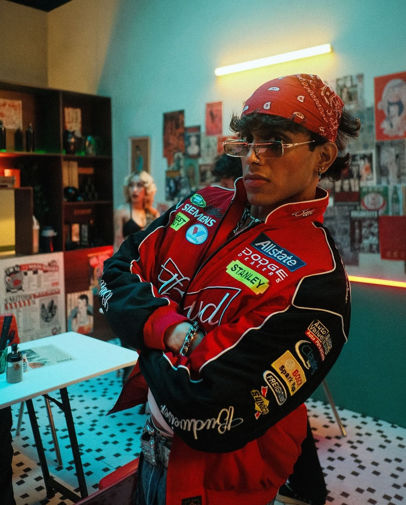
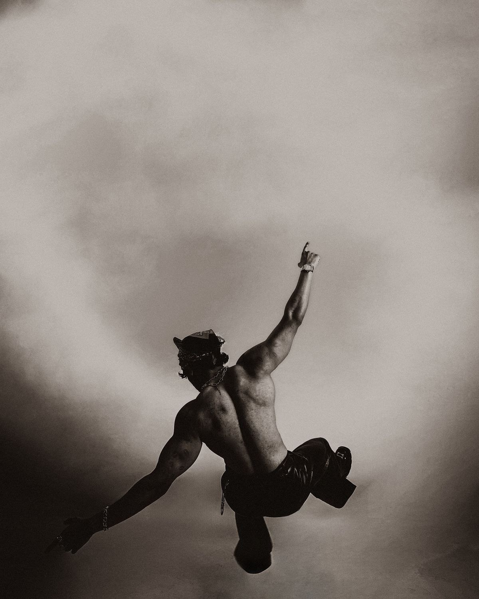

Fashion as image, identity and point of view.
I've worked with homegrown labels on modelling, campaign imagery, product photography and social content. Some of this work has appeared across brand websites and e-commerce pages.
The listed names reflect collaborations and freelance assignments, not employment relationships.
HUEMNVerveFormer SaintsSaajh.coHyperpop.inIkoho ShoesSuffireAlienkindFetti Bags

Editorial presenceOn-camera

Visual movementCreative work
COLLABORATION APPROACHNot just wearing the frame.
Being part of its language.
Being part of its language.
Interested in the intersection of styling, image-making, cultural references and how a label presents itself.